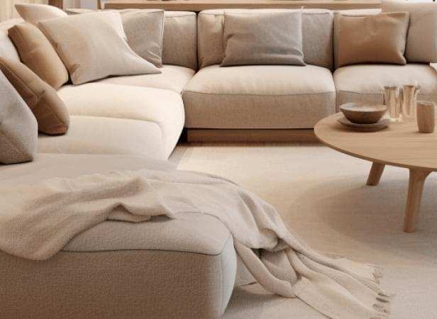

Рекомендации по выбору подрядчика. бригада мастеров или компания?
Как выбрать подрядчика для отделки интерьера квартиры или коттеджа в стиле минимализм
Сергей Дорогин Комплектатор интерьера
«Из результатов моего практического опыта проведения тендеров на отделочные работы в интересах заказчиков, я сделал выбор в пользу нескольких небольших бригад с работающим бригадиром и рекомендую их своим заказчикам и вам»
01. Запрашиваем сметы у бригад и компаний, сравниваем позиции и объемы
Самые популярные площадки для поиска подрядчика:
Инстаграм
Авито
Поиск в Яндекс и Гугл
У бригад с реальными рекомендациями бывает нет даже портфолио, но они всегда востребованы. Такие нам интереснее, чем остальные.
Наличие или отсутствие сайта, страницы в социальной сети, портфолио, отзывов на Флампе или других площадках не является для нас критерием отбора. По умолчанию не берем в расчет все, что можно купить за деньги и выдать как свою компетенцию или преимущество. Это важно.
Вы столкнетесь с множеством предложений от бригад — это нормально. В последние 3 года количество мастеров и бригад по отношению к числу компаний заметно выросло.
Это связано с кризисом, развитием рекламных площадок, социальных сетей и с законом о «самозанятых» — стало проще размещать рекламу, не нужно открывать ИП, чтобы выдать чек на услуги, стали менее востребованы посредники, прорабы и фирмы.
Предложения с ценой «по полу» или «все под ключ за…» не рассматриваем, в таких предложениях часто урезанный список работ, а нам нужно, чтобы все было сделано в соответствии со стандартами и технологиями, обеспечивающими высококачественный класс отделки.
Состав сметы может сказать о многом: о порядочности и качественном подходе к делу в том числе
Внимательно смотрим и сравниваем позиции в сметах, ищем пропуски работ, явные отличия перечня, думаем, как неполный список работ может повлиять на качество и увеличение цены за счет неучтенных в смете работ.
Ремонт закончится, сервис перестанет быть важным, а качество останется надолго, в вашем интерьере
При выборе из компаний, оказывающих клиентам сервис (офисное представительство, подарки-бонусы, проект-менеджер, штатный дизайнер, прораб и прочие «плюшки») учитываем, что результат работ в большей степени будет зависеть от квалификации мастеров, а не от «зоркости» прораба, контроля проект-менеджера или другого оказываемого сервиса. Проверяем квалификацию мастеров посещением объектов.
02. Сравниваем цены и выявляем квалификацию мастеров, выбираем нужное нам соотношение цены, качества и сервиса
Цена труда мастера с опытом ± соответствует его квалификации
Рынок все отрегулировал, хапуги с ценой не соответствующей квалификации есть, но они выявляются фирмами и бригадами при первой же проверке, поэтому такие чаще работают в одиночку или с подсобником.
Как правило мастера высокой квалификации уходят из компаний и объединяются в бригады по 3-4 мастера + подсобники, а компании и прорабы часто нанимают мастеров с оплатой труда «по низу рынка», чтобы после своей наценки на цену труда мастера оставаться конкурентоспособными.
Вы можете условно разделить квалификацию мастеров на 3 класса по запросу оплаты
Ориентируйтесь на этот показатель при сравнении фирм и бригад с разными сметами и организационной структурой — чем больше доля оплаты мастера в смете, тем выгоднее для вас предложение в плане качества, но как правило, вы получите меньше сервиса:
При одинаковой смете в 100 монет, мастера в бригаде с работающим бригадиром получат их до 95-ти;
В фирме типа «прораб и бригада» ≈ 70–75% получат мастера;
В более крупной компании ≈ 50-65% ваших денег дойдет до мастеров.
Как вы полагаете, в каком из вариантов вы получите больше самоотдачи мастера вашей задаче?
При практически равной цене предложения, часто бывает так, что выбирают фирму (ИП или, что хуже — ООО), как внушающую большее доверие, пусть и с небольшой переплатой в 10–20%
Далеко не всегда такой выбор оправдывает ожидания, и как результат — более низкое качество работ при большей оплате. Почему так?
Потому, что при равной квалификации мастеров, адекватные цены у «прораба с бригадой» должны быть минимум на 30–40% выше цены бригады, состоящей из мастеров и бригадира, а не на 10–20%! (см.выше), а нормальная разница в цене услуг бригады «вольных» мастеров и цен «компании», «фирмы» должна быть не 30–40%, а от 55–100% (см.выше)
Потому, что компании закладывают в смету вашего ремонта предлагаемые вам же скидки, бонусы, подарки, прибыль учредителя, зарплату директора, замерщика, сметчика, снабженца, прораба, менеджера, расходы на рекламу, ведение аккаунтов-портфолио в ВК, на сайте, Инстаграм, аренду офиса, налоги и представительские расходы и ошибки неквалифицированных сотрудников, убытки от гарантийных случаев и редко когда платят зарплату мастерам более 50–60% от сметы…
Все эти расходы компании (все ли?)) необходимы, чтобы оказать вам сервис во время самого процесса ремонта, создать видимость экспертности или преувеличить ее, привлечь большее заявок на ремонт при низкой конверсии в заказ, создать управляемый, системный бизнес и получить прибыль.
Итак, вы выбрали лучшее предложение в отношении цена/качество/сервис. Что дальше?
Следующим шагом проверяем компетенции подрядчика.
03. проверяем отзывы, едем в гости, на экскурсию
Просим подрядчика выслать несколько фото его желательно почти завершенной работы, которую он может показать нам при встрече. Смотрим, если все нравится, договариваемся о встрече на объекте.
Просим фото скрытых работ, на которых смотрим изоляцию на замурованных водопроводных и канализационных трубах, как сделаны штробы электрики (должны быть вертикально вырезаны штроборезом, а не выбиты зубилом), аккуратность.
Осматриваем ремонт, просим при вас проверить стены правилом, углы лазерным уровнем, смотрим как уложена плитка, как установлена сантехника, укрыто ли то, что нужно пленкой, ищем дефекты визуально, расспрашиваем мастеров о скрытых работах, удалялись ли маяки из штукатурки, проверяем все что можно, «примеряем на себя».
Просим встречи с заказчиками осмотренного ремонта или разговариваем с ними по телефону собирая всю важную информацию о подрядчике: качество работы (то, что скрыто), финансовые и организационные вопросы.
Только таким способом возможно получить достоверный отзыв. Никаких Флампов, сайтов и Инстаграмов — только личное общение, личный отзыв от заказчика.
Простой пример:
У подрядчика отличный сайт, красивые аккаунты в ВК и Инстаграм, большое и привлекательное портфолио, отличные цены, подробная смета.
Вам показали все акты сдачи-приемки работ, сверки расчетов и другую бухгалтерию на этот объект, и в целом вам все очень понравилось, и при посещении объекта подрядчик вам все рассказал и показал в лучшем виде, вас все очень даже устраивает. Но вот заказчик отзывается о подрядчике отрицательно.

К сожалению, не все профи приятны в общении, бывает, что отличное качество работ и других вполне стандартных условий приходится выбивать сложными отношениями, тщательными приемами, множеством замечаний, даже угрозами и скандалом.
Не стоит менять ремонт на нервную систему, подрядчиков с плохими отзывами нам не нужно.
04. Заключаем договор подряда с ИП или самозанятым
Они отвечают своим имуществом по договору, в отличии от ООО.
Обязательное и важное приложение к договору — это смета, определяющая его стоимость, план выполнения работ, сроки работ и условия обстоятельств их продлевающие, требования к качеству.
В договоре должны быть прописаны обязанности по снабжению и комплектации объекта (что делает подрядчик, а что заказчик), порядок оплаты и гарантийные обязательства.